library(tidyverse)
library(sf)
library(here)
library(maptiles)
library(tidyterra)
library(knitr)
library(tigris)T5: Trip Assignment
The purpose of this assignment is for you to
- Run the Transit and Highway Assignment steps and compare the results between two scenarios.
Load libraries
This analysis uses the following packages:
Run model
There is some kind of problem with TDM23 running in TransCAD 10 that throws an error at the end of the Transit Park and Ride Assignment Step. It doesn’t (as far as I can tell) effect your ability to run the rest of the model, but it does stop the run. Also, the model logic will iterate through the highway assignment step twice, and to save you time, I’m only going to have you do it once. This means you will need to run the model in three steps, two of which are very time consuming.
Run to Transit PnR Assignment
This part runs for about ten hours on my laptop. It is also requires a lot of disk space. Before you start, make sure you have at least 20 or 30 GB available on your C: drive for each scenario you will be running.
Open the model file in TransCAD.
Right-click on and of the model steps, rover over the “Run >” item on the pop-up menu, and select “Run Range of Steps…”
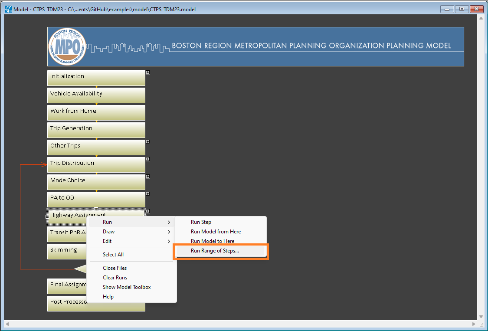
Hold down the ctrl or shift key while selecting all three of these steps:
PA to OD
Highway Assignment
Transit PnR Assignment
Click OK.
Click OK on the Model Run confirmation dialog.
Spend the next ten hours or so away from your computer, doing healthy things like eating, sleeping, or spending in-person time with your friends or loved ones.
When you get back your computer, you will see this unsettling message:
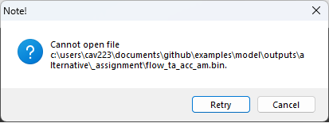
Click Cancel, and you’ll see this message:
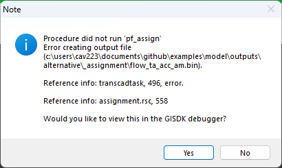
Click No, and just close TransCAD. These messages are trying to trick you. Everything is fine. Open TransCAD again and open the model again and run the skimming step.
Run the skimming step
This part should only take 15 or 20 minutes.
Right click on the Skimming step and select “Run >” and “Run Step”.
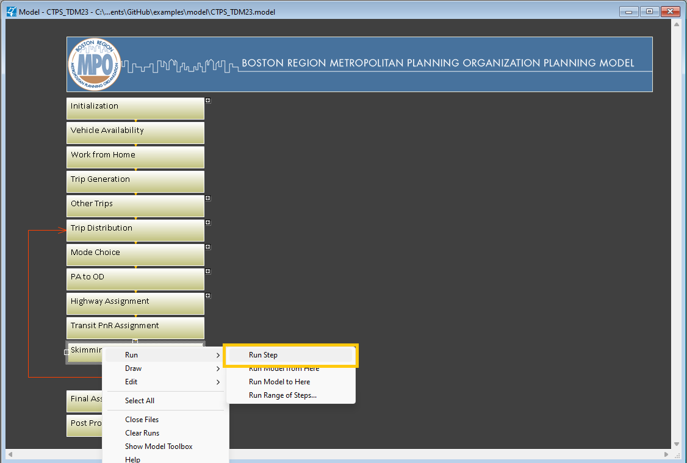
Run Final Assignment and Post-Processing
This part takes about 8 hours on my laptop.
Right-click on the “Final Assignment” step and click “Run Model from Here”.
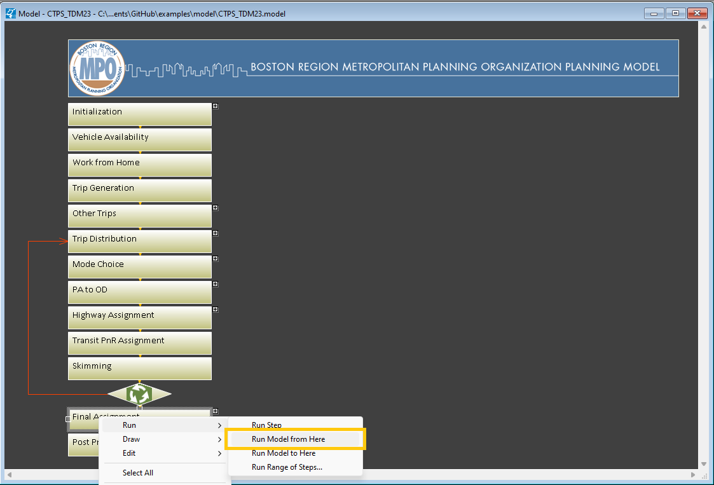
Again, hopefully you’ve scheduled you’re time so that you’re doing this right before you’d be going to sleep for the night anyway. Come back in the morning to a screen that tells you you’ve successfully completed the model run.
Highway volumes
Export highway network
In order to visualize where there are changes in roadway traffic volumes, you’ll need a spatial layer showing where the roads are. You can export the roadway layer from TransCAD to a geojson file that you can load into R.
The file you want is in the folder:
inputs
networks
TDM23.1.0
{scenario name}
- tdm23_1_0_2019_ln.db
You will want to open this file and then select File > Export > Geography.
The file type you would export it to would be a geojson file. Be sure and uncheck the box for “export attribute fields.” When you include the attribute fields in your export to a geojson file, you lose the ID field that you would need to join link volumes to this layer.
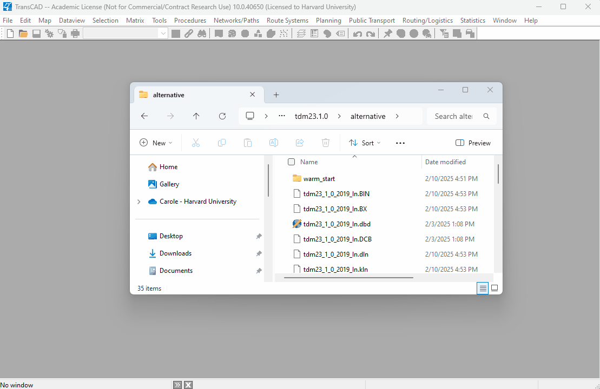
Load highway network
Now you can read that geojson file into R.
all_roads <- here("model",
"inputs",
"networks",
"tdm23.1.0",
"2019",
"hwy.geojson") |>
st_read()And we can draw a quick map of the network (this is just to confirm that the data loaded).
ggplot(all_roads) +
geom_sf() +
theme_void()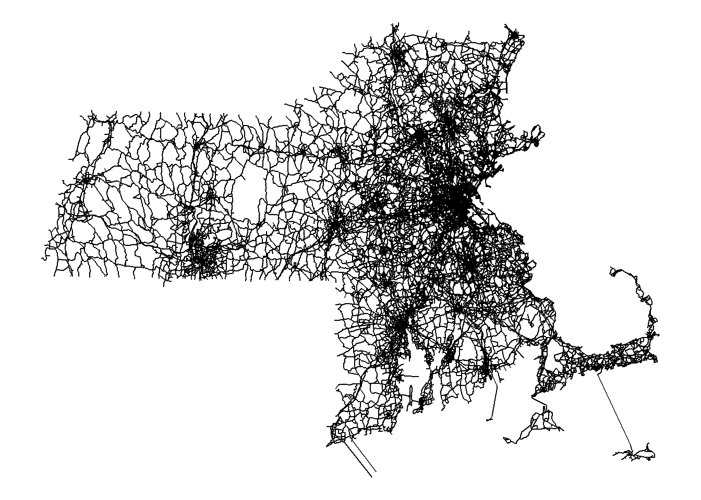
Load link volumes
The link volumes resulting from the trip assignment step are in the following four csv files:
outputs
{scenario name}
_assignment
flows_am.csv (AM peak period)
flows_pm.csv (PM peak period)
flows_md.csv (mid-day off-peak period)
flows_nt.csv (nighttime off-peak period)
In this example, I’m focusing on the AM peak period, but you can choose a different time period or multiple time periods. Here I’ll read in the estimated flows for both the base condition and the alternative condition.
am_hwy_flows_base <- here("model",
"outputs",
"Base",
"_assignment",
"flows_am.csv") |>
read_csv() |>
rename(ID = ID1,
base_flow = Tot_Flow_PCE) |>
select(ID, base_flow)
am_hwy_flows_alt <- here("model",
"outputs",
"Alternative",
"_assignment",
"flows_am.csv") |>
read_csv() |>
rename(ID = ID1,
alt_flow = Tot_Flow_PCE) |>
select(ID, alt_flow)Compare link volumes
And now I will join both of these sets of flow data to the geometry of the roads, and I will calculate the difference between them. Since I deleted some links from the road network for my alternative, the flows for those links won’t be in the file for my alternative so those values will be missing in the joined dataset. I will replace them with zeros before calculating the difference.
link_vols_compare <- inner_join(all_roads, am_hwy_flows_base) |>
left_join(am_hwy_flows_alt) |>
replace_na(list(alt_flow = 0)) |>
mutate(flow_diff = alt_flow - base_flow) Most of the differences are going to be small, and I might be most interested in differences near where I changed the transportation network and land uses, so I will filter my data to only include roads within five kilometers of the the bridge I removed (42.400187426238766, -71.08355937577717).
To calculate a buffer, I need to first transform the CRS for that point to the Massachusetts State Plane coordinate system (EPSG code = 26986).
missing_bridge_vicinity <- tibble(lat = 42.400187426238766,
lon = -71.08355937577717) |>
st_as_sf(coords = c("lon", "lat"), crs = "WGS84") |>
st_transform(26986) |>
st_buffer(dist = 5000)
vicinity_links <- link_vols_compare |>
st_transform(26986) |>
st_filter(missing_bridge_vicinity)I may find that it’s easier to visualize increases and decreases separately, so I will create separate layers for increases and decreases (and I’m also filtering out differences of less than fifty vehicles).
vicinity_increases <- vicinity_links |>
filter(flow_diff > 50)
vicinity_decreases <- vicinity_links |>
filter(flow_diff < -50) |>
mutate(flow_diff = -1 * flow_diff)And now I can visualize the increases on a map.
base_map <- get_tiles(vicinity_links,
provider = "CartoDB.Positron",
zoom = 12,
crop = TRUE)
ggplot(vicinity_increases) +
geom_spatraster_rgb(data =base_map) +
geom_sf(aes(color = flow_diff),
linewidth = 1) +
scale_color_viridis_c(transform = "log2",
breaks = c(80, 160, 320, 640, 1280),
direction = -1,
name = "Increase in morning\npeak traffic volumes") +
theme_void()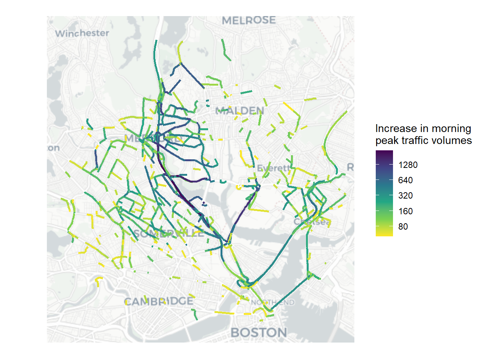
And the decreases:
ggplot(vicinity_decreases) +
geom_spatraster_rgb(data =base_map) +
geom_sf(aes(color = flow_diff),
linewidth = 1) +
scale_color_viridis_c(transform = "log2",
breaks = c(80, 160, 320, 640, 1280, 2560, 5120),
direction = -1,
name = "Decrease in morning\npeak traffic volumes") +
theme_void()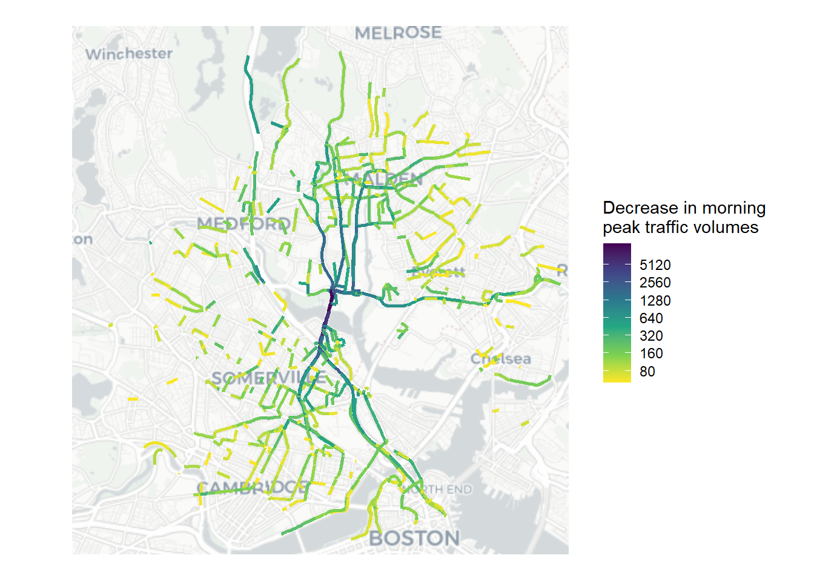
What do you notice?
Transit ridership
We will also evaluate changes in ridership at the stop level.
Export transit stops
Open the transit routes layer for your alternative (in the baseline scenario, it’s called tdm23_1_0_2019_rs.rts) in TransCAD. Make the stops layer visible and export it as a geojson as you did for the highway layer.
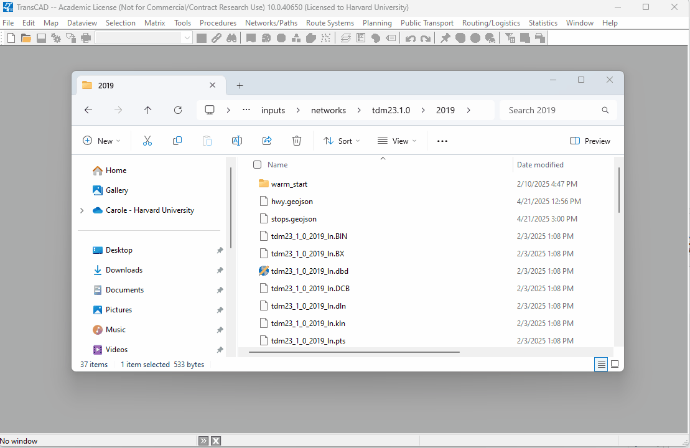
Load transit stop locations
Now you can read in the stop locations into R.
stop_locs <- here("model",
"inputs",
"networks",
"tdm23.1.0",
"2019",
"stops.geojson") |>
st_read()And let’s take a look at those stop locations.
base_map <- get_tiles(stop_locs,
provider = "CartoDB.Positron",
zoom = 8,
crop = TRUE)
ggplot(stop_locs) +
geom_spatraster_rgb(data = base_map) +
geom_sf(size = 1, color = "orange") +
theme_void()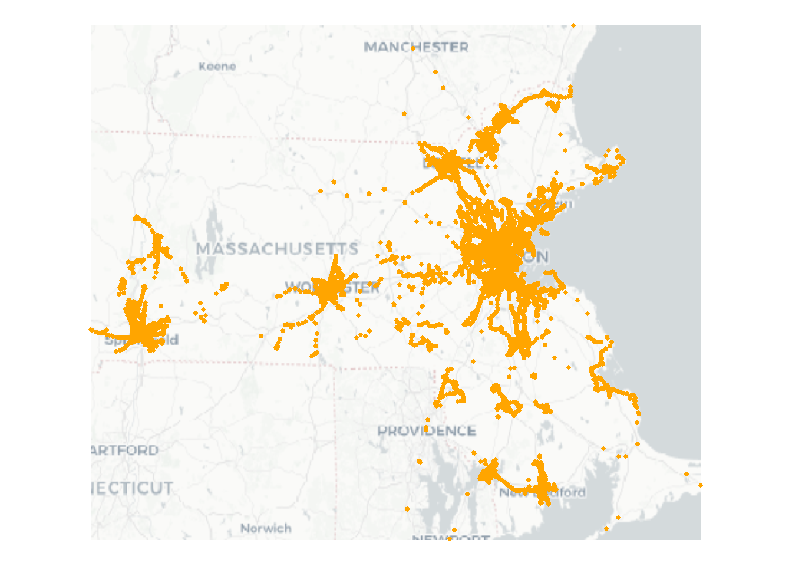
Load boarding/alighting data
In this example, I’m focusing on the AM peak and on those who walk to and from their transit stops (i.e. I’m ignoring those who use park and ride lots).
base_onoff <- here("model",
"outputs",
"Base",
"_assignment",
"onoff_tw_am.csv") |>
read_csv(show_col_types = FALSE) |>
select(STOP, On, Off) |>
rename(base_on = On,
base_off = Off,
ID = STOP)
alt_onoff <- here("model",
"outputs",
"Alternative",
"_assignment",
"onoff_tw_am.csv") |>
read_csv(show_col_types = FALSE) |>
select(STOP, On, Off) |>
rename(alt_on = On,
alt_off = Off,
ID = STOP)Compare ridership
Now I can join those to their locations and make some comparisons. What are the ten transit stops with the biggest changes in ridership?
stop_diff <- stop_locs |>
inner_join(base_onoff) |>
left_join(alt_onoff) |>
mutate(base_total = base_on + base_off,
alt_total = alt_on + alt_off,
diff = alt_total - base_total) |>
mutate(abs_diff = abs(diff)) |>
arrange(-abs_diff) |>
mutate(inc_dec = ifelse(diff < 0, "Decrease", "Increase"))
stop_diff |>
st_drop_geometry() |>
select(ID, diff) |>
head(n = 20) |>
kable()| ID | diff |
|---|---|
| 211631 | -553.49350 |
| 211646 | 332.91760 |
| 273705 | 322.39490 |
| 273526 | -278.40820 |
| 273792 | -233.82211 |
| 273605 | -228.14690 |
| 273793 | 218.34815 |
| 211647 | 193.08940 |
| 273515 | -130.18300 |
| 273700 | 127.98830 |
| 273693 | 123.59944 |
| 273594 | -119.47960 |
| 273462 | 112.80430 |
| 273799 | -107.55530 |
| 273456 | 104.21321 |
| 212224 | 98.86720 |
| 273239 | 93.06498 |
| 274115 | 91.13020 |
| 211635 | 85.62100 |
| 274109 | 84.07744 |
It looks like there are 15 stops with changes of more than 100 boardings and alightings in the AM peak. Let’s see where they area.
big_stop_diffs <- stop_diff |>
filter(abs_diff > 100)
base_map <- get_tiles(big_stop_diffs,
provider = "CartoDB.Positron",
zoom = 13,
crop = TRUE)
ggplot(big_stop_diffs) +
geom_spatraster_rgb(data = base_map) +
geom_sf(aes(size = abs_diff,
color = inc_dec),
alpha = 0.3) +
scale_size(name = "Magnitude of change") +
scale_color_manual(name = "Direction of change",
values = c("red", "blue"),
labels = c("Decrease",
"Increase")) +
theme_void()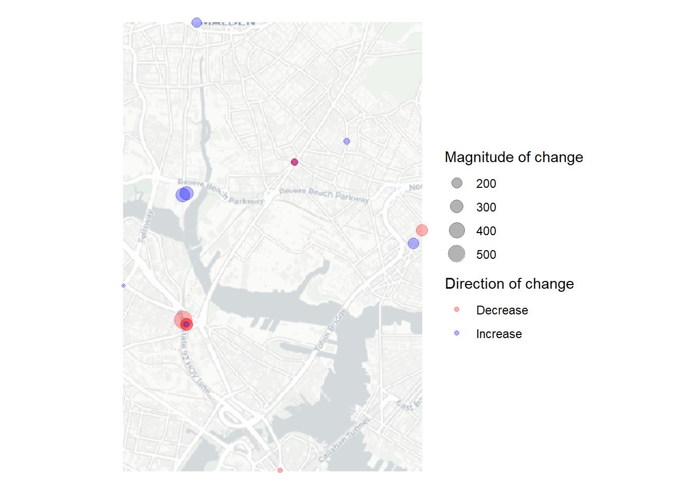